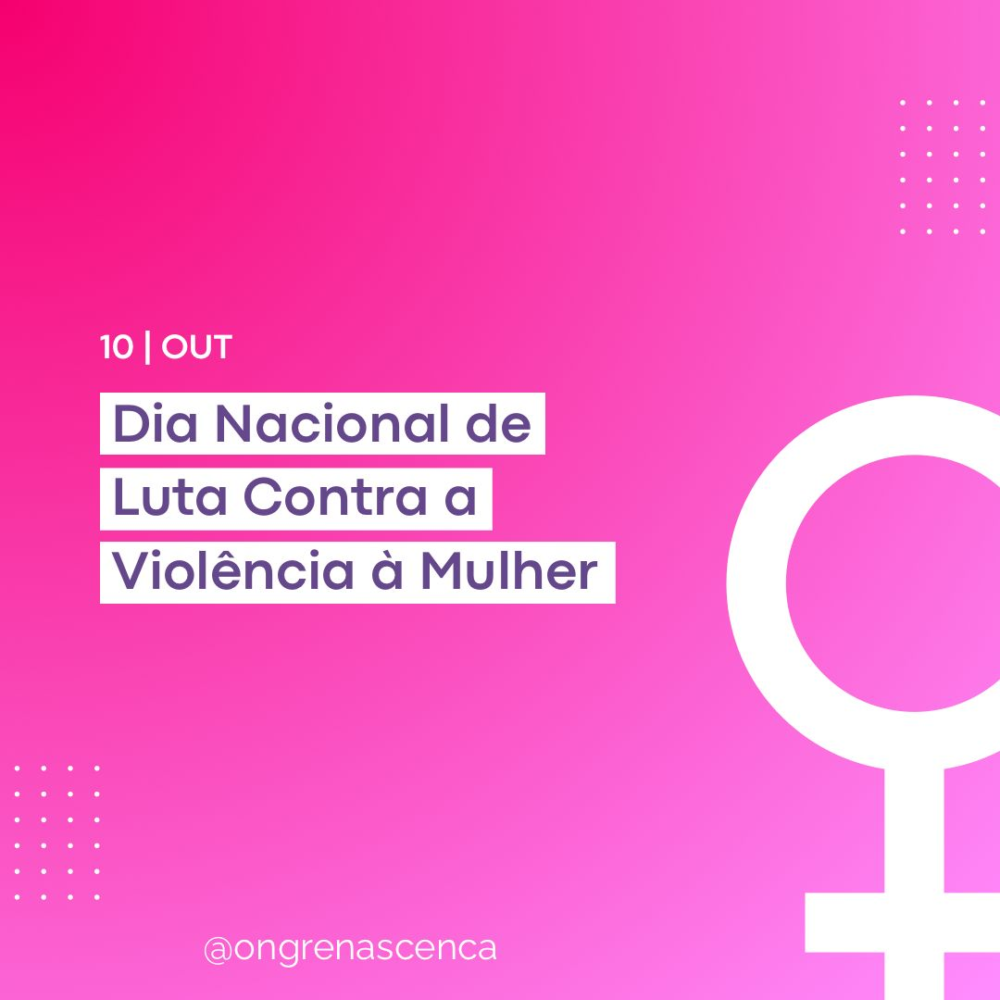

Quem Somos
Apresentação
A Renascença é uma organização sem fins lucrativos criada para apoiar mulheres vítimas de violência doméstica. Oferecemos um espaço seguro e confidencial para que cada mulher possa contar sua história, receber orientação e construir um plano de recomeço.
Missão
Promover o acolhimento, a escuta e o empoderamento de mulheres em situação de violência, oferecendo suporte psicológico, jurídico e social para que possam reconstruir suas vidas com autonomia e segurança.
Visão
Ser referência no enfrentamento à violência doméstica e na promoção da igualdade de gênero, inspirando uma rede de solidariedade e transformação social.
Valores
- Respeito à dignidade humana
- Empatia e acolhimento
- Igualdade e justiça social
- Ética e sigilo
- Comprometimento e solidariedade
Equipe
Nossa equipe é formada por psicólogas, advogadas, assistentes sociais e voluntárias comprometidas. Trabalhamos de forma integrada para oferecer atendimento integral e humanizado.